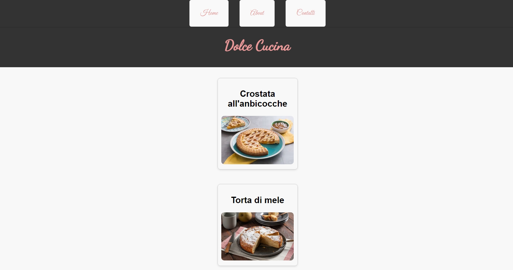

My Projects
Mondo Cyberpunk
Ricette di Cucina
Galleria Fotografica
L'impatto della tecnologia sulla salute mentale
To do list

Sviluppatore Software, specializzato nel frond end.
Appassionato di creazioni di soluzioni d'impatto.
Sempre alla scoperta di nuove tecnologie.
Ho 28 anni, abito in provicia di Pescara.
Numero: 329 4321 043
Mail: alessandrodisilvestre.3@gmail.com
Sono uno Sviluppatore Software appassionato di creare soluzioni incentrate sull’utente, con tre anni di esperienza. Con una formazione in Tecnologia dell’Informazione presso Cocademy, ho affinato le mie competenze attraverso stage e contributi open-source, non si finisce mai di imparare, non si finisce mai di evolversi, sono una spugna assetata di conoscenza. Al di fuori della programmazione, mi piace aiutare gli altri nella comunità tecnologica, condividere conoscenze e collaborare su progetti.
Role: Software Developer Intern
Location: Remote, Milano
Duration: Maggio 2024 - Luglio 2024
Role: Front-End Developer
Location: Remote
Duration: Luglio 2022 - Marzo 2024
Role: Front-End Developer
Location: Remote, Milano
Duration: Gennaio 2022 - Maggio 2022